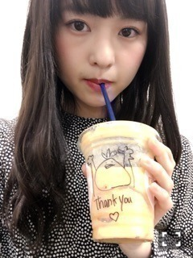
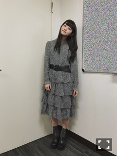
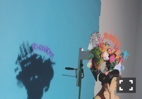

昨日は映画『Anniversary』
トークショーに登壇しました。
「記念日が行方不明」監督の
高橋栄樹さんとサシトーク。わぁ貴重！
来てくださった皆様
ありがとうございました。
上映後と上映前だったので
いろんな話ができました。
ペアPVの裏話だったり、
映画の経緯だったりきっかけだったり、
お芝居、ものづくりの楽しさ難しさを
高橋監督と共有できたことが嬉しかった。
そういうのっていいな！
もちろん、それが全てではないし
世に出るものの大半それだけで
良いものが生まれるわけじゃない。
それ以外に対応する力がないと
これから先好きなことできないだろうし。
価値観が違うならそれはそれとして
見てみようとか話を聞こうみたいな
受け入れる姿勢って大事。
どこからか湧いてきた好奇心で
同じものに向かっていくこととか
そこで生まれる縁だったり運だったりで
つくられるものは良い悪い以前に
他にない深みや思いが滲み出る、はず。
伝わるか伝わらないかで
話は変わってくるけども。
経験不足で外の世界を
少ししか見てない私なので、
また違う経験した時に今思ってることと
違う気持ちになるかもしれないけどもな！
影響されて自分なりに考えて形成されてく！
深いところに落ちてみたい。
これはトークショーを終えての
メモ的な感想です。
くそながいな！
このオムニバス映画には
好奇心がたくさん詰まっている、と思う。
楽しそうやってみよう
っていう気持ちは常に持っていたい。
あと、何にせよ対応しなきゃ私は。
できてないからいっぱい反省。

ジュースになんかいた！！
トマトとフルーツのミックス∠( 'ω')／
こいつはトマトなの、にわとりなの、なになの、、

時間ギリギリに見つけた
Diorのヴィンテージ。
ティアードかわいいいい！
すぐ買ってすぐ着たやつ。
イヤリングつけ忘れた。ベルトも買った。
気になるものだらけです(°▽°)
ハンガーラック追加しよう！！はは！！
装苑80周年記念！
おめでとうございます。
気づいた頃には側にあった装苑。
記念号に掲載されています。
なんと有難いことでしょうか！！
しかもKLOKAの矢島沙夜子さんと
コラボレーション！わー！い！
ノーメイクonウィッグon熊手。
素敵なアクセサリーや装飾を
作っているKLOKAさんです。
素敵な熊手だったピザ。
最高エビフライさすがですタッセル。

おめでたい。装苑さん！
これからもずっと応援してます。
そしてクリエイターズコラボ
応募してくださった皆様
ありがとうございました。お楽しみ！
まりか